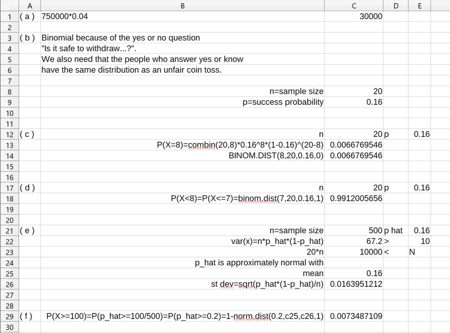

In this set of notes we work through some notions and examples from statistics. You can read the questions here, study the written or handwritten notes, and while doing so, listen to some explanations by clicking on the "play" button.
Lesson 38, The Language of Hypothesis Testing.
A statistician often wants to make a conclusion about a true or false statement, e.g., \(H_0\): The magic pill under clinical trial has the same effect as placebo. (This is nor a numerical statement as it now stands, but we can often replace it with a numerical statement that would more or less have the same import.) This \(H_0\) is called a null hypothesis. We assume the null hypothesis and compute some quantity that has some value with some level of probability. We gather measurements on the quantity and say how likely it is that the observations square with the null hypothesis. If it is very unlikely that they do, then we reject the null hypothesis. If it is not very unlikely that the measurements square with the null hypothesis, then we fail to reject the null hypothesis. The negation or a negation of the null hypothesis is called the alternative hypothesis and is denoted by \(H_1\) or \(H_a\). We itch to reject the null hypothesis, thus lending some support to the alternative hypothesis (e.g., the magic pill works better than placebo).
Suppose we have a double blind trial of a blood pressure lowering pill. Some guys get the magic pill, some get the sugar pill, and nobody officially knows who gets what. We regularly collect the blood pressure measurements from the participants. We compute the mean blood pressure for the magic pill group, and also for the sugar pill group. Say, we observe that mean stays the same for one group before and after the trial, and it drops for the other group. We could use statistics to compare the two differences in means. Perhaps, it is large enough so that we can attribute it to some genuine effect (The magic pill works!) rather than some random fluctuation. We could have a null hypothesis that the "after minus before" mean blood pressures for the two groups are equal. We could try to put a probability on the measured differences that they are equal under the null hypothesis. If the probability is very low (lower than a predetermined threshold called a level of significance), then we say we reject the null hypothesis. If the probability is not low enough, then we fail to reject the null hypothesis. Comparision of two means can be done as an ANOVA test based upon the F-distribution.
A hypothesis is a statement regarding a characteristic of one or more populations. Hypothesis testing is a procedure, based on sample evidence and probability, used to test statements regarding a characteristic of one or more populations.
Steps in Hypothesis Testing 1. Make a statement regarding the nature of the population. 2. Collect evidence (sample data) to test the statement. 3. Analyze the data to assess the plausibility of the statement.
The null hypothesis, denoted \(H_0\) (read "H-naught"), is a statement to be tested. The null hypothesis is a statement of no change, no effect, or no difference and is assumed true until evidence indicates otherwise. The alternative hypothesis, denoted \(H_1\) (read "H-one"), is a statement that we are trying to find evidence to support.
Equal hypothesis versus not equal hypothesis (two-tailed test)
\(H_0\) : parameter \(=\) some value
\(H_1\) : parameter \(\not=\) some value
Equal versus less than (left-tailed test)
\(H_0\) : parameter \(=\) some value
\(H_1\) : parameter \(<\) some value
Equal versus greater than (right-tailed test)
\(H_0\) : parameter \(=\) some value
\(H_1\) : parameter \(>\) some value
Four Outcomes from Hypothesis Testing
-
Reject the null hypothesis when the alternative hypothesis is true. This decision would be correct.
-
Do not reject the null hypothesis when the null hypothesis is true. This decision would be correct.
-
Reject the null hypothesis when the null hypothesis is true. This decision would be incorrect. This type of error is called a Type I error.
-
Do not reject the null hypothesis when the alternative hypothesis is true. This decision would be incorrect. This type of error is called a Type II error.
The level of significance, \(\alpha\), is the probability of making a Type I error.
The worse type of error in hypothesis testing is the Type I error when we jump to the conclusion that the magic pill works when it does not. The Type II error in this case is that we fail to reject the null hypothesis that the magic pill has the same effect as the placebo, when we should have, i.e., the magic pill does not have the same effect as the placebo. If we make the Type I error in this case, then the pill maker may still be happy with us (since we supported the outcome they wanted), but the regulatory body will not be happy with us. If we make the Type II error, then the pill maker may not be happy with us (We will never hire you to test for us again!), and the public might be sad that we unnecessarily deprive them of their effective magic pill.
Question. Determine whether the hypothesis test is left-tailed, right-tailed, or two-tailed. What parameter is being tested? \(H_0\colon \mu = 5\), \(H_1\colon \mu>5\).
Right-tailed, \(\mu\).
Question. Determine whether the hypothesis test is left-tailed, right-tailed, or two-tailed. What parameter is being tested? \(H_0\colon \sigma = 4.2\), \(H_1\colon \sigma\not= 4.2\).
Two-tailed, \(\sigma\).
Question. Complete College. For students who first enrolled in two-year public institutions in fall 2007, the proportion who earned a bachelor’s degree within six years was 0.399. The president of Joliet Junior College believes that the proportion of students who enroll in her institution have a higher completion rate.
(a) Determine the null and alternative hypotheses.
(b) Explain what it would mean to make a Type I error.
(c) Explain what it would mean to make a Type II error.
(a) \(H_0\colon p = 0.399\); \(H_1\colon p>0.399\) (b) The sample evidence leads the president to conclude the proportion of students who earn a bachelor’s degree within six years is greater than 0.399, when, in fact, the proportion is 0.399. (c) The sample evidence leads the president to conclude the proportion of students who earn a bachelor’s degree within six years is not greater than 0.399, when, in fact, the proportion is greater than 0.399.
Question. Single-Family Home Price. According to the National Association of Home Builders, the mean price of an existing single-family home in 2013 was $245,700. A real estate broker believes that existing home prices in her neighborhood are lower.
(a) Determine the null and alternative hypotheses.
(b) Explain what it would mean to make a Type I error.
(c) Explain what it would mean to make a Type II error.
(a) \(H_0\colon \mu = \$245,700\); \(H_1\colon \mu< \$245,700\). (b) The sample evidence led the real estate broker to conclude that the mean price of an existing single-family home is lower in her neighborhood, when in fact the mean price is not lower. (c) The sample evidence led the real estate broker to conclude that the mean price of an existing single-family home is not lower in her neighborhood, when in fact the mean price is lower.
Question. State the conclusion based on the results of the test if the null hypothesis is rejected. For students who first enrolled in two-year public institutions in fall 2007, the proportion who earned a bachelor’s degree within six years was 0.399. The president of Joliet Junior College believes that the proportion of students who enroll in her institution have a higher completion rate.
There is sufficient evidence to conclude the proportion of students who enroll at Joliet Junior College and earn a bachelor’s degree within six years exceeds 0.399.
Question. Retirement Savings. Designed by Bill Bengen, the 4 percent rule says that a retiree may withdraw 4% of savings during the first year of retirement, and then each year after that withdraw the same amount plus an adjustment for inflation. Under this rule, your retirement savings should be expected to last 30 years, which is longer than most retirements.
(a) If your retirement savings is $750,000, how much may you withdraw in your first year of retirement if you want the retirement savings to last 30 years?
(b) According to the American College of Financial Services, the proportion of people 60 to 75 years of age who believe it would be safe to withdraw 6 to 8 percent of their retirement savings annually is 0.16. Suppose you conduct a survey of twenty 60 to 75 year olds and ask them if it is safe to withdraw 6 to 8 percent of retirement savings annually if they wish their retirement savings to last 30 years. Explain why this is a binomial experiment. What are the values of \(n\) and \(p\)?
(c) In a random sample of twenty 60 to 75 year olds, what is the probability exactly 8 individuals will believe it is safe to withdraw 6 to 8 percent of retirement savings annually if they wish their retirement savings to last 30 years.
(d) In a random sample of twenty 60 to 75 year olds, what is the probability fewer than 8 individuals will believe it is safe to withdraw 6 to 8 percent of retirement savings annually if they wish their retirement savings to last 30 years.
(e) Suppose you obtain a random sample of five hundred 60 to 75 year olds. Explain why the normal model may be used to describe the sampling distribution of \(\hat p\) the sample proportion of 60 to 75 year olds who believe it is safe to withdraw 6 to 8 percent of their retirement savings annually. Describe this sampling distribution. That is, find the shape, center, and spread of the sampling distribution of the sample proportion.
(f) Use the normal model from part (e) to approximate the probability of obtaining a random sample of at least one hundred 60 to 75 years olds who believe it would be safe to withdraw 6 to 8 percent of their retirement savings annually assuming the true proportion is 0.16. Is this result unusual? Explain.

See the attached spreadsheet. (a) $30,000.
(b) This is a binomial experiment because (i) there is a fixed number of trials, (ii) there are two mutually exclusive outcomes, (iii) the trials are independent because the sample size is small relative to the population size, and (iv) the probability of success is fixed for all trials. Here, \(n = 20\), \(p = 0.16\).
(c) \(P(X=8) = 0.0067\).
(d) \(P(X<8) = 0.9912\).
(e) Assume that \(\hat p = 0.16\), so \(n\hat p(1-\hat p) = 500\times0.16\times(1 - 0.16) = 67.2> 10\) and the sample size is less than 5% of the population size assuming there are more than 10,000 60- to 75-year-olds in the population (which is reasonable). Therefore, the sample proportion is approximately normal with mean 0.16 and standard deviation \(\sqrt{0.16(1 - 0.16)/500} = 0.016\).
(f) \(P(X \ge 100) = 0.0073\). This result is "unusual". If the true proportion of 60- to 75-year-olds who believe it is safe to withdraw 6 to 8 percent of their savings annually is 0.16, we would expect about 7 of every 1000 samples of size 500 to result in at least 100 who believe this. We might conclude from this that the true proportion of 60- to 75-year-olds who believe it is safe to withdraw 6% to 8% of their savings annually is greater than 0.16.